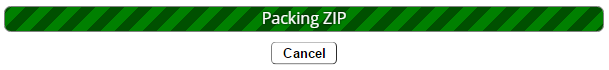
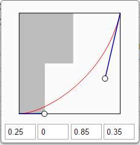
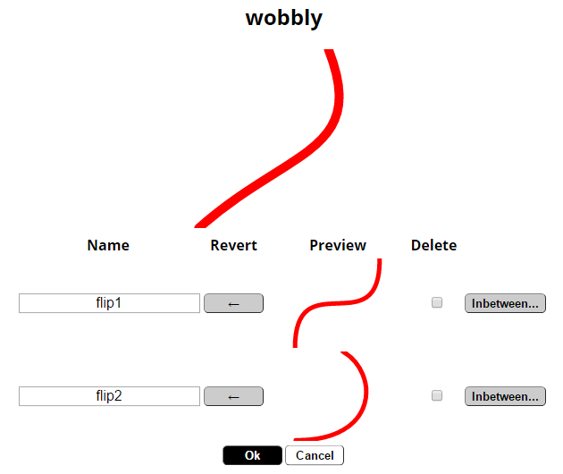

Welcome to the user manual for the aniGen SVG editor, version 0.8.1. This manual describes how to animate and manipulate SVG files. This manual includes examples as well as a basic overview of SVG internal file format.
From a high level, SVG files are text files that can be loaded in web browsers and display graphics. These SVG images can be animated as well as have interactivity with browser users. For example, a SVG graphic might show a chart, that changes shape and color when you click on it. add graphic Also, SVG graphics can be zoomed in or made as large as you want, without losing resolution. In other words, SVG graphics aren't get grainy or pixelated.
For more technical specificsabout SVG format, see the format's specification.
This document may be incomplete and/or partially out of date with the current version. If you find discrepancies, please follow the procedures in the bug reporting section.
aniGen is a browser-based SVG editor to modify your SVG files to provide animation and interactivity. aniGen is designed to work in tandem with the vector software, Inkscape, expanding its functionality Transferring SVG files between these two software editors should work without loss of information.
aniGen is free software available as is. It is written and maintained by Ondřej 'Aibo' Benda, and covered by GPLv3 license. The editor is currently in testing phase. Please report any bugs you encounter.
The editor is developed mainly for use with the Google Chrome browser, but works equally as well with other browsers, such as Mozilla Firefox. JavaScript needs to be enabled for aniGen to function properly.
aniGen uses the following third-party assets, as mentioned in the "about" section of the editor:
to
 aniGen only works with existing SVG files (preferably created with Inkscape).
When aniGen is first loaded, you can open a SVG file by either:
aniGen only works with existing SVG files (preferably created with Inkscape).
When aniGen is first loaded, you can open a SVG file by either:
If a file is stored in local browser storage (by selecting file→save or hitting ctrl+s), it will be available in the file open dialogue. The local file can be deleted by the button next to it.
_Raster files (i.e. JPEG and PNG files) will be appended to the currently selected container object. SVGs will be merged, i.e. all elements container in the root SVG element will be moved to the current SVG's root element, and the contents of defs (clip paths, gradients, animation states etc.) will be moved to current defs.
Note: It's recommended to save file before importing.
SVG can be exported as a series of PNGs or static SVGs archived in a ZIP. User can set:
Static SVGs will create individual SVG files for each frame, stripped of all animations.
Default duration is set to the loop length specified by the user with animation→loop animation... dialogue, or is computed as the least common multiple of all animation durations.
If only one frame is exported, it's downloaded directly instead of in a ZIP.
 While rendering, the editor will be unavailable. Progress and estimated time to completion (HH:MM:SS) is shown.
Progress percentage is shown in the page title.
The rendering process can take significant time, which scales with the number of elements in the SVG. Furthermore, each PNG is stored in the computer's memory. It's recommended to export longer animations,
or animations with extremely large size, in smaller segments. Rendering process can be canceled (with slight delay).
While rendering, the editor will be unavailable. Progress and estimated time to completion (HH:MM:SS) is shown.
Progress percentage is shown in the page title.
The rendering process can take significant time, which scales with the number of elements in the SVG. Furthermore, each PNG is stored in the computer's memory. It's recommended to export longer animations,
or animations with extremely large size, in smaller segments. Rendering process can be canceled (with slight delay).
When all frames are rendered, they are packed into a ZIP, which then triggers the standard save dialogue of the browser. This process takes some time, but comperatively little to the rendering process.
Note: While mostly working, exporting is still in its testing phases. Save your work before you export and please report any problems.
Note: High resolutions, high downsampling settings, and long export times can lead to browser running out of allocated memory. It's advised to save your work before exporting, and export larger animations in shorter intervals.

The main window of aniGen (shown above) consists of eight main sections:
The XML editor and windows are toggled by the icons on right side of toolbar.
The top left section shows the following (left to right):
Shows information about currently selected element:
 Selection information of a layer. Left to right: tag name (g for group), identifier ("layer1"), inkscape's group name ("mouth").
Selection information of a layer. Left to right: tag name (g for group), identifier ("layer1"), inkscape's group name ("mouth").
Selection information of an animated group. Left to right: tag name (g for group), identifier ("g4138"), group type ("animated group"), group name ("mouth-female-3q").
The visual representation of SVG document. The page (area exported as animation) is specified by the gray border. Page size can be set in Inkscape. See also controls and tools.
 Keyframes window shows the keyframes and timing of currently selected animation.
(See animation for more details.)
Keyframes window shows the keyframes and timing of currently selected animation.
(See animation for more details.)
While details may vary, each keyframe generally has a percentage (its position relative to the duration of the animation), time (the same, as time relative to the animation's beginning) and one or more values. Animations with the spline interpolation mode also show the respective splines between every pair of keyframes.
Clicking the percent or time value of each keyframe allows you to change it, within the 0% - 100% range, or boundaries given by the animation's duration respectively.
Keyframes can be selected by clicking the striped button on the left. To select multiple frames, hold ctrl. Holding shift will select all frames between the furthest already selected frame and the frame clicked.
Values can be changed with standard input fields. If multiple keyframes are selected, all of their values are changed when you change one. It's also possible to drag the keyframes to switch their values with one another, or move them up and down with page up / page down. Selected keyframes can be duplicated with ctrl+d and deleted with delete.
Splines can be changed between various presets or a custom value can be given instead. If custom spline is selected, a button allows the user to edit it.
The editor shows spline as the red curve, defined by its two control points (handles). The rectangles shown depict a five second animation, the top rectangle showing linear progression, the bottom showing progression as set by the given spline. Input fields allow direct change the spline's numeric components, and change with the handles. Any changes are immediately applied to the animation. Selecting multiple keyframes changes the spline for all of them.
Selected keyframes are affected by the context menu (right click). If none is selected, the clicked keyframe is affected, except the cases noted below.
 The second tab of the window shows a list of begin times, that is times when animation will start (see duration, repetition, and begins for more details).
New begins can be added by inputing a time (in seconds) in the field below the list, and selecting "add". Begins are removed by the buttons on their right. The end time given for each begin time is the time when the given set of loops (if applicable) of animation ends -
if two loops overlap, the animation resets at the later begin value.
The second tab of the window shows a list of begin times, that is times when animation will start (see duration, repetition, and begins for more details).
New begins can be added by inputing a time (in seconds) in the field below the list, and selecting "add". Begins are removed by the buttons on their right. The end time given for each begin time is the time when the given set of loops (if applicable) of animation ends -
if two loops overlap, the animation resets at the later begin value.
Manages fill and stroke of selected element. Both fill (the inner parts of an element) and stroke (element's outlines) can be set to one of the following:
Fill also allows the user to change the fill rule:
For generic link, an indentifier input field is given.
The third tab allows the user to change the stroke's other properties.
aniGen currently doesn't have UI elements for creating and editing gradients, other than doing so manually. Linked objects (e.g. gradients) can be selected with link the appropriate button.
Additionally, the sliders at the bottom part of the window allows the user to change the blur and opacity of the element, independent of fill and stroke.
 The window similar to its Inkscape's counterpart. It shows layer groups in the usual order (higher layers overlap lower ones). Nested layers are shown indented.
Current layer is higlighted, and can be moved up and down with the menu below, the context menu (right click), or page up / page down keys.
The window similar to its Inkscape's counterpart. It shows layer groups in the usual order (higher layers overlap lower ones). Nested layers are shown indented.
Current layer is higlighted, and can be moved up and down with the menu below, the context menu (right click), or page up / page down keys.
visibilityvisibility_offThe show/hide icon allows toggling visibility of each layer.
Below the layer list is a menu with following items:
Right-clicking layers opens a context menu with similar options:
 The XML editor allows quick navigation through the SVG's elements. Branch elements (i.e. elements with children)
can be opened by clicking the share button, displaying their children in standard tree fashion. These elements can also be selected by double-clicking.
Leaf elements (i.e. elements with no children) can be selected by single click.
The XML editor allows quick navigation through the SVG's elements. Branch elements (i.e. elements with children)
can be opened by clicking the share button, displaying their children in standard tree fashion. These elements can also be selected by double-clicking.
Leaf elements (i.e. elements with no children) can be selected by single click.
XML editor is useful for quick navigation between elements, as well as selecting animations, which have no direct graphical representation to click.
Elements are shown (from top to bottom) in order of rendering, meaning the lowest elements will be on top of the drawing.
Some elements in XML tree have specific icons:
While using aniGen, a log can be displayed (at the bottom of the screen) detailing your interactions, as well as problems that aniGen ran into. To turn on/off the Event log interface, either:
Shows the animation's canvas as it will look when exported. Limited controls are available:
Canvas is painted in with white, the remaining portion of the window is black.
Generally used for selecting elements by clicking in a manner similar to Inkscape. Specific tools may change the default behavior.
Right click usually opens a context menu (for selected element, or contextual to the given window).
Middle button allows user to drag the canvas view.
Scroll wheel moves view up and down. Shift + wheel moves view left and right. Ctrl + wheel zooms in and out. Alt + wheel seeks (moves time) forward and backward, ctrl mask increases the seek distance.
| F1 | Select the group selection tool |
| F2 | Select the element selection tool |
| F3 | Select the zoom tool |
| F5 | Refreshes the window (after confirmation) |
| F7 | Select the picker tool |
| Space/Pause/Ctrl + P | Pause / Play animations |
| Alt + Pause | Rewind animations |
| Ctrl + ←/1 | Go to previous keyframe of selected animation |
| Ctrl + →/3 | Go to next keyframe of selected animation |
| Ctrl + ↓/2 | Go to the closest keyframe of currently selected animation |
| +/E | Seek forward (1s if animation is running, 100ms if animation is paused) |
| Shift + +/Shift + E | Seek forward (10s if animation is running, 1s if animation is paused) |
| Alt + +/Alt + E | Seek forward (100ms if animation is running, 10ms if animation is paused) |
| -/Q | Seek back (1s if animation is running, 100ms if animation is paused) |
| Alt + -/Alt + Q | Seek back (100ms if animation is running, 10ms if animation is paused) |
| Shift + -/Shift + Q | Seek back (10s if animation is running, 1s if animation is paused) |
| Ctrl + A | Select / unselect all keyframes (keyframe window only) |
| W/Ctrl + R | Set current value for selected animation |
| Escape | Hide popup / dialogue |
| Ctrl + + | Zoom in |
| Ctrl + - | Zoom out |
| Delete | Remove currently selected element |
| Ctrl + Y/Ctrl + Shift + Z | Redo |
| Ctrl + Z | Undo |
| Page Up | Raise currently selected element |
| Page Down | Lower currently selected element |
| Home | Raise currently selected element to the top of its parent |
| End | Lower currently selected element to the bottom of its parent |
| ←/↑/↓/→ | Move selected element |
| Alt + ←/Shift + A | Select previous sibling of selected element |
| Alt + →/Shift + D | Select next sibling of selected element |
| Alt + ↑/Shift + W | Select parent of selected element |
| Alt + ↓/Shift + S | Select first child of selected element |
| Alt + ↑/Alt + W | Select closest animation parent of selected element |
| Ctrl + Shift + E | Open Export dialogue |
| Ctrl + Shift + K | Open / close the Keyframes and timing window |
| Ctrl + Shift + L | Open / close the Layers window |
| Ctrl + Shift + X | Open / close the XML editor window |
| Ctrl + O | Open the open dialogue |
| Ctrl + S | Saves SVG into browser local storage |
| Ctrl + Shift + S | Save and download SVG |
| Ctrl + C | Copy selected element into clipboard |
| Ctrl + X | Cut element and move it to clipboard |
| Ctrl + V | Paste element or animation timing (animation to animation) |
| Ctrl + D | Duplicate selected element |
| Ctrl + L/Alt + D | Creates a <use> link element. |
| Ctrl + G | Group selected element |
| Ctrl + U | Ungroup selected element |
near_meBased on Inkscape's "Select and transform objects" tool.
editBased on Inkscape's "Edit path by nodes" tool. Directly selects graphical objects, disregarding groups they might be in, and allows their editing with nodes.
searchZooms in or out at the factor of square root of two.
colorizeBased on Inkscape's "Picker" tool. When a graphical element is selected:
If an animation is selected and any number of keyframes is selected in the keyframe window:
Right-click context menu will also show additional options tied to the selected element and target.
All types of SVG animations share some common properties. Each animation has set duration of one pass (with possible repetition), a set of begin times, and keyframes which describe the value at given times, denoted as percentages of the animation's duration.
Furthermore, animations can be set to hold their last value after they finish (or return to the original value), are able to acumulate (meaning each run of the animation will add to the previous value), and calculate values through different interpolation modes.
All animations have a set duration. This describes how long a single run of the animation lasts. In aniGen, this value is in seconds.
Any animation can have multiple begin times. At each time, the animation restarts, and if applicable, loops the given number of times. If an animation is set to begin again while it's still running, it will usually reset. aniGen uses values given in seconds of the SVG's time.
An animation can repeat multiple time per each beginning. Repeat count of zero means the animation only runs once, higher values denote multiple repetitions. Furthermore, repetition can be set to "indefinite", meaning the animation will run forever (or until it's ended by external source).
The progress between every pair of values can be calculated in several ways:
A non-linear way of interpolation between keyframes. Splines are simple curves defined by two control points, each as its X and Y value between 0 and 1.
aniGen uses several spline presets, but also allows the user to set custom splines more suited to their needs.
The following examples show simple two-value animation. Top bar progresses according to a spline, bottom bar has linear progression. Spline's shape is depicted in red, its control points are shown as white circles.


Each animation has a set of keyframes. Each is denoted by its time (given as percentage of a single animation run) and its value. If spline interpolation mode is selected, every frame (except the first one) will have a spline attached to it as well, describing how the animation progresses to this keyframe from the previous one.
Format of values is specific to each animation type. In general, each "value" is actually a set of numeric values. As the animation progresses, the value is changed from one to the other according to the selected interpolation mode. For instance, a path animation will calculate the position of each control point of the path at each given time. This limits animations somewhat; an animation with no clear way to change from one value to the next will progress discretely (it will jump). For instance, a path's shape can only change into a shape with the same amount and types of control points. Other attributes, such as visibility, can have non-numeric values (visible/hidden), and can only change discretely.
Keyframes can be manipulated through the keyframes and timing window. Motion and transformation animations also have a node-based interface shown on the canvas, and described in sections below.
Keyframe window allows duplication and deletion of keyframes (with the minimal two keyframes - 0% and 100%). Keyframes can be moved by dragging, efectively switching values (and splines) while retaining timing.
Animations have several other attributes:
Post-animation state (or "fill") describes how animation affects its parent once it finishes. If from animation is selected, it will retain the value of its last keyframe. On the other hand, selecting original will return the affected element to the state it had before the animation.
Additive indicates whether animation should add to any previous value the affected element already has or not. For instance, an additive translation from 0 to 100 will move the element from its original position. For non-additive animation, if the element already has a transformation attribute, however, it will be completely replaced. It's recommended to set additive to "yes" for transformations and motion along a path. Attribute animations, in contrast, are usually better served by replacing the attribute completely.
Cumulative attribute indicates the animation should add to its own value each time it runs. This means that with each repetition (or new begin), the last value is kept as initial, and new values are added to it. For instance, a cumulative translation from 0 to 100 will, in first run, move the object from 0 to 100. On second repetition, the object will move from 100 to 200, and so on. This is particularly useful for creating continuous movement which should go forever.
There are, for most intents and purposes, three basic animation types in SVG. Transformations change the element's transform attribute, allowing for rotation, translation, scaling, and skewing. Motion along path is similar, and as name implies, moves the element along a given path. Attribute animation is the widest and most generic type of animation, which allows for the change of almost any remaining attribute of almost any SVG element.
Element can be animated with the menu animation option, or with the filter_none animate element toolbar button.
Multiple animations can be applied to the same object. Their behavior can be exclusive if not set to additive.
videocamAnimates the SVG's viewbox - the rectangular view, which ultimately gets rendered. Each keyframe is defined as a rectangle. By default, the aspect ratio stays the same as the original, but this can be changed manually. However, the view always gets rendered to the same size raster, which would lead to uneven stretching or shrinking of the picture.
trending_upMovement along X and Y axis. Each keyframe is defined by two values indicating the element's position. The node interface allows the user to set each by hand. Holding ctrl while dragging a node will move it in straight line from previous node to current node's last position. While not as versatile as motion through path, multiple translation animations can be combined to achieve similar effect without the hassle connected to the path management.
swap_callsHas the element travel along a given path. Optionally, the angle can be set (or set to auto or auto-reverse) this will turn the element as it travels along the path instead of simply translating it. The picker tool can be used to assign the animation's path. The animation values are distance as percentage along the path, allowing the animation to run back and forth, or in reverse.
refreshTurning around a given origin. Keyframes hold angle (in degrees) and the X and Y position of the origin. The position of origin can change throughout the animation, allowing for fairly complex range of motion (albeit harder to master than simply turning along a single point). Node interface allows the user to move all origins with the same location, and all handles. For each origin, angle zero is given as the angle the line from the origin to the affected element. This can effectively combine rotation with translation within a single animation.
zoom_out_mapChanging the element's size. Described by scale factor in X and Y axis (allows independent scaling). As SVG has no native support for scaling origin, aniGen provides a more-or-less functional workaround. It's recommended to group any element you intent to scale, and only apply the scaling animation to this group to avoid issues.
swap_horizswap_vertSeparated into horizontal (X axis) and vertical (Y axis) skew animations. Each keyframe is defined by the skew angle, zero being the initial value. A workaround similar to that with scaling is employed for skewing, and similar care should be used when using this animation.
text_formatChanges the selected attribute of the parent (except transform and several other attributes) through time. Each value indicates the new value. Several attributes (display, visibility, opacity) allow the user to select values from available presets. If keyframes are selected in the keyframes window, the picker tool can be used to pick values of other (clicked) elements with relative ease.Camera
Translation
Motion through path
Rotation
Scaling
Skewing
Attribute animation
aniGen expands the basic animation functionality by introducing animated groups.
The user can select any element (including groups) and save it as an animation state with main menu or right-click context menu.
States are grouped according to the number and order of elements, so that standard path animation is applicable between all of them. When created, animated group allows the user to set each state from the group as the value of given keyframes. This allows the user to quickly change one complex shape to another without the need to create and synchronize large number of attribute animations.
 Animation states are set by selecting an object, and chosing object→Put state in Animation Group from the main menu, or via right-click context menu.
Animation states are set by selecting an object, and chosing object→Put state in Animation Group from the main menu, or via right-click context menu.
When selected, the user will be able to pick a name for the given state, as well as the group. If no group exists, or no group shares the element model necessary, the user will have to pick the New group option and naming the group.
Note: if a group is made into a state, its transformation is disregarded. This means one can duplicate a group, move it somewhere else, and tweak elements therein without fear of making the final animation travel the distance.
Note: if all children of selected elements share the same element model, a batch option is provided. This allows the user to set all the child elements as individual states, sharing the same group. For example, if the selected element is a layer, which has a number of sub-layers, each with a single state, the batch option will create a group named after the parent layer, and popuplate it with states named after each individual sub-layer. This is experimental.
New animated group can be created via the main menu, or by right-click context menu.
Animated groups behave like any other animation, with few notable exceptions. While they have duration, begins, times, and so on, each value corresponds to a state name the user has given.
The keyframe window also includes a small preview of the selected shape, as well as an intensity slider. This allows the user to quickly create states part way between two existing state - intensity is the percentage of the change from previous state to the one in the given keyframe.
 Intensity can also be set manually to a value outside the 0 - 1 range, creating an extrapolated state. This can have rather mixed results.
Intensity can also be set manually to a value outside the 0 - 1 range, creating an extrapolated state. This can have rather mixed results.
Tip: To "hold" a temporary value created with intensity slider, simply set the intensity of the following keyframe to zero.
Another addition is the ability to select which attributes will be animated. By default, the d attribute (see paths) is animated, but more can be added as the users desires.
 Existing animation states can be viewed and changed with object→manage animation states menu option.
The dialogue shows all existing state groups, animation states, and a live preview. The states can be renamed, and the states can be deleted.
State groups can be hidden by clicking their name. Empty groups are deleted automatically.
Additionally, new states can be created from existing ones as an interpolation (inbetween value), or extrapolation, similar to the use of intensity option in keyframe window.
The new state is a combination of two previous states, and is added to the end of the group.
An SVG is an XML format, meaning the file is composed of elements. In code, these usually appear as pairs of tags similar to this:
<svg id="green"></svg>
In this example, svg is the element's tag name, id is a name of an attribute (in this case an identifier), and green is this attribute's value. <svg> is the opening tag and </svg> is the closing tag.
An element can have various attributes. Some are shared betwen different types of elements, like id or transform, others are exclusive to certain type of element, like dur (animation duration).
Most elements can have children, that is, other elements between the opening and closing tags.
<svg id="green">
<g id="group"></g>
</svg>
In this case, the g element is a child of the svg element.
An SVG file will usually have single svg element as its root, and all other elements will be its children, or the children of its children (and so on). This is called "nesting" and creates a tree structure depicted in the XML editor.
All SVGs share these basic properties.
As mentioned above, elements can have various attributes. For example:
<rect
id="rectangle1"
x="10"
y="20"
width="50"
height="100"
fill="red"
>
</rect>
The code above defines a rectangle (rect element). Its top left corner is denoted by the given x and y attributes, its width and height by attributes of the same name (all sizes default to pixels). Furthermore, its fill color is set to "red", equal to the hexadecimal value of #ff0000.
Were one of the attributes changed, e.g.
<rect
id="rectangle1"
x="50"
y="20"
width="50"
height="100"
fill="red"
>
</rect>
The element's properties will change. In this case, the top left corner (along with the rest of the element) will move 40 pixels right (along the x axis).
All SVG animations work by changing an attribute (or in some cases, CSS styles) over time.
Attributes of interest common to multiple types of elements:
| Attribute name | Description | Possible values |
|---|---|---|
| transform | Transformation of given element, usually in the form of a 3x3 matrix (simplified as its first two rows, i.e. six numeric values). Basis of all transformation animations. | matrix(a b c d e f), rotate(angle cx cy), translate(x y), scale(x y), skewX(angle), skewY(angle) |
| id | Identifier, unique to the SVG file. Other elements can use this to connect to others, for example, in case of gradients. | string |
| style | CSS styles, providing a large number of various visual options - colors, opacity, stroke width and dashing are all handled by these. | semicolon separated pairs of name:value |
| display | Whether the element should or should not be displayed. Sometimes as part of CSS styles. | usually none or inline (none meaning hidden) |
| visibility | Whether the element should or should not be visible, similar to "display". Sometimes as part of CSS styles. | usually hidden or visible |
| opacity | Opacity (non-transparency) of the given element. Carries over to all of its children. | numeric value between 0 and 1 (1 meaning 100% opaque) |
This section contains a list of elements common to most SVG files, links to their official documentation, as well as short list of attributes interesting for attribute animation.
See also W3C recommendation.
Usually the root element of an SVG document (although not exclusively). Amongst others, SVG has the following attributes of interest:
For the purpose of keeping aniGen running, animation of SVG attributes is not advised.
See also W3C recommendation.
A container element, meaning an element with no actual graphical representation - simply holds other elements.
See also W3C recommendation.
A special container element, usually placed directly in the root svg element. Holds definitions, which can be various other elements. These are not rendered, but can be linked to by other elements in the SVG file.
For example, defs element holds the information about all clip paths, masks and filters. In aniGen, animation states are also kept here.
See also W3C recommendation.
One of several graphical elements. Attributes of note:
| Attribute name | Description | Possible values |
|---|---|---|
| x | x-axis position of top left corner | numeric value or length |
| y | y-axis position of top left corner | numeric value or length |
| width | width | numeric value or length |
| height | height | numeric value or length |
| cx | x-axis rounding of corners | numeric value, percentage, or length |
| cy | y-axis rounding of corners | numeric value, percentage, or length |
See also W3C recommendation.
Circle, a special case of an ellipse (with both radii being the same). Attributes of note:
| Attribute name | Description | Possible values |
|---|---|---|
| cx | x-axis position of center | numeric value, percentage, or length |
| cy | y-axis position of center | numeric value, percentage, or length |
| r | radius | numeric value or length |
See also W3C recommendation.
Attributes of note:
| Attribute name | Description | Possible values |
|---|---|---|
| cx | x-axis position of center | numeric value, percentage, or length |
| cy | y-axis position of center | numeric value, percentage, or length |
| rx | x-axis radius | numeric value or length |
| ry | y-axis radius | numeric value or length |
| ry | y-axis radius | numeric value or length |
See also W3C recommendation.
Bread and butter of most SVG vectors - a Bézier curve. Shape is defined by its d attribute (path data), a sequence of commands.
When animating a path, keep in mind that both d attributes must have the same number and types of commands. In inkscape, the simplest way to achieve this is to create one path, duplicate it and adjust each node to another position, then each of the paths for different animation keyframe.
See also W3C recommendation.
A link to another element. If original element changes, the link changes with it.
You can create links with from menu edit→create link.
See also W3C recommendation.
Groups of animations which change the transform attribute of their parent. Includes translation, rotation, scaling, and horizontal and vertical skewing.
Attributes of note:
| Attribute name | Description | Possible values |
|---|---|---|
| begin | List of begin times. | semicolon separated list of time values |
| dur | Duration of single pass of animation | time value |
| repeatCount | Number of repeats of animation per each begin. | nonnegative numeric value or "indefinite" |
| fill | The state of the animated object after the animation finishes - freeze denotes the last value should be kept, remove means the object returns to the original state. | freeze or remove |
| additive | Whether this animation adds to values already present in the parent or completely replace them. | sum or replace |
| accumulate | Cumulation of the animation with itself. If set to sum, the animation will add to its last value each time it is repeated (good for infinitely moving objects). | none or sum |
| calcMode | Interpolation mode. | linear, spline, discrete, or paced |
| keyTimes | See keyframes. | Semicolon separated list of ascending numeric values between 0 and 1 |
| keySplines | See splines. | Semicolon separated groups of four numeric values between 0 and 1 |
| type | Specific type of this animation. | translate, rotate, scale, skewX, or skewY |
| values | Values for each keyframe. | Semicolon separated list of values (groups of numeric values) |
See also W3C recommendation.
Animation along a path. Shares most attributes with transform animation (except type and values), with these expetions:
| Attribute name | Description | Possible values |
|---|---|---|
| keyPoints | List of lengths along the path for each keyframe. | semicolon separated list of numeric values between 0 and 1 |
| path | Path data of the given path. | path data |
See also W3C recommendation.
Generic animation of attribute. Can handle almost anything except transform (which has specific animations). Shares most attributes (except type) with transform animation.
Bread and butter of most complex animations - can do anything from changing a path's shape to element's opacity to the color of its stroke.
to be added
Please report any bugs encountered via email to bugs(at)aniGen.org. aniGen is also hosted on GitHub at https://github.com/aibosan/anigen. If you are familiar with using GitHub, you can post bugs there as well.
Bug reporting should include following: